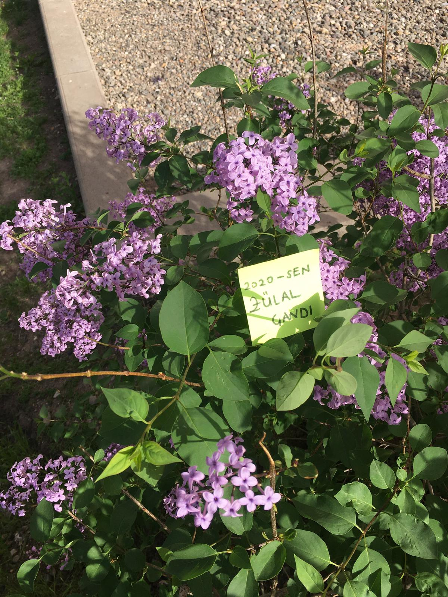

ZÜLAL ÇANDI30/05/2000 tarihinde Çorum'un iskilip ilçesinde doğdum. İlkokul ve ortaokul eğitimimi burada tamamladıktan sonra lise hayatıma Ankara'da başladım. Şuanda Kırıkkale Üniversitesi'nde Bilgisayar Mühendisliği 2.sınıf öğrencisiyim. Bu siteyi sen mutlu ol diye, mutluluğun küçük şeylerden de elde edilebileceğini anlatmak için, yani "SEN"İN İÇİN yaptım. Umarım hoşuna gider. |
 | |